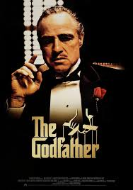
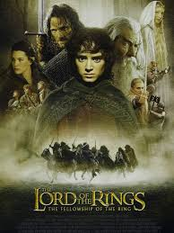
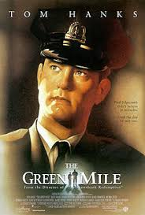

|  | Baba2s 55dk | Dedektif, Dram Yönetmen Francis Ford Coppola Oyuncular: Marlon Brando, Al Pacino, James Caan Orijinal adı The GodfatherBaba, 40’lar ve 50’lerin Amerika’sında, bir İtalyan mafya ailesinin destansı öyküsünü konu alıyor. Don Corleone’nin kızı Connie’nin düğününde, ailenin en küçük oğlu ve bir savaş gazisi olan Michael babasıyla barışır. Bir suikast girişimi, Don’u artık işleri yönetemeyecek duruma düşürünce, ailenin başına... |
|  | Yüzüklerin Efendisi: Kralın Dönüşü3s 21dk | Macera, Fantastik Yönetmen Peter Jackson Oyuncular: Sean Astin, Elijah Wood, Viggo Mortensen Orijinal adı The Lord of the Rings: The Return of the KingYüzüklerin Efendisi: Kralın Dönüşü, Tek Yüzük'ün yok edilmesi için verilen mücadeleyi konu ediyor. Sauron'un orduları büyüdükçe büyümektedirler. Frodo ve onun can dostu Sam, korku dolu bir yolculuğun göbeğinde, korkunç Mordor'a adım adım yaklaşmaktadırlar. Tek yüzük yok edilmelidir ve iyilik bunun için savaşmaya... |
|  | Yeşil Yol3s 9dk | Dedektif, Dram, Fantastik Yönetmen Frank Darabont Oyuncular: Tom Hanks, Michael Clarke Duncan, David Morse Orijinal adı The Green MileYeşil Yol, bir hapishane görevlisi ile bir mahkumun öyküsünü anlatıyor. Paul Edgecomb'un hapishanedeki görevi, idama mahkum edilen mahkumları son yolculuklarına uğurlamaktır. Çalıştığı yıllar içerisinde yüzlerce mahkumu idam etmiştir. Bir gün John Coffey isimli korkutucu görünümlü bir adamla tanışır. Ancak Coffey'in bu... |